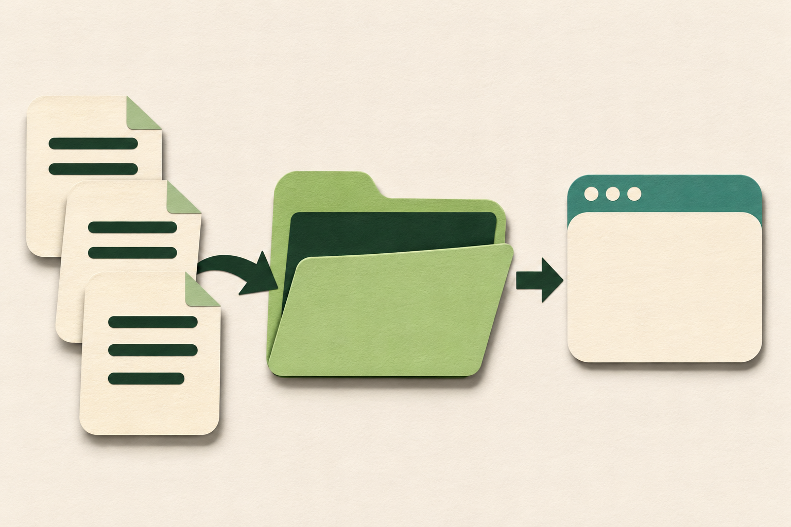
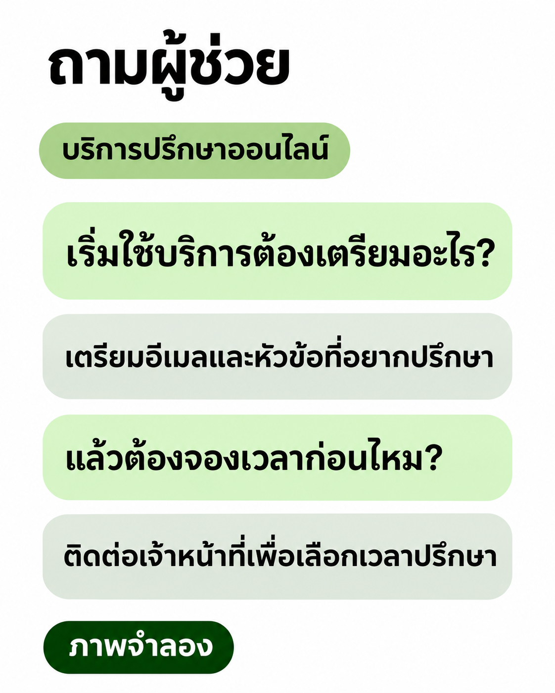

คำถามหนึ่งข้อ
ใครตอบคำถาม
ในแอปของเรา?

มีบริการอีกแห่ง
ช่วยอยู่เบื้องหลัง
ช่วยอยู่เบื้องหลัง
ตัวอย่างบริการปรึกษาออนไลน์
ทำไมต้องมี API
สองระบบ
ใช้กติกาเดียวกัน
แอป
อีกบริการ
ส่งคำขอรับข้อมูลกลับ
กติกาที่ตกลงกัน
เรียกที่ไหน · ส่งอะไร · รับแบบใด
ข้อมูลอากาศ / การชำระเงิน / AI
API · ส่งคำขอและรับข้อมูล
ก่อนส่งคำขอ
คำถามเดินทาง
พร้อมอะไรบ้าง?
คำขอใช้ผู้ช่วย
เลือกปลายทางผู้ช่วยตอบคำถามบริการ
ส่งคำถามเริ่มใช้บริการต้องเตรียมอะไร?
ตัวอย่างข้อมูลที่ต้องส่ง
ไม่ใช่แบบฟอร์มหรือ key จริง
ไม่ใช่แบบฟอร์มหรือ key จริง
หนึ่งรอบ · ขาไป
จากหน้าจอ
ไปถึงผู้ช่วย
หน้าจอแอปผู้ใช้พิมพ์ / อ่านคำตอบ
ระบบของแอปเชื่อมต่อ • เก็บกุญแจอย่างปลอดภัย
LangMindผู้ช่วย AI ที่ตั้งค่าไว้
คำถาม
LangMind API
หนึ่งรอบ · ขากลับ
แอปรับข้อมูล
แล้วจึงแสดงคำตอบ
หน้าจอแอปผู้ใช้พิมพ์ / อ่านคำตอบ
ระบบของแอปเชื่อมต่อ • เก็บกุญแจอย่างปลอดภัย
LangMindผู้ช่วย AI ที่ตั้งค่าไว้
ข้อความ + รหัสบทสนทนา

นำไปใช้กับงานแบบไหน
ผู้ช่วยอยู่
ในบริการของเราได้

คุยกับผู้ช่วยที่ตั้งค่าไว้
รับข้อมูลคำตอบผ่าน API
รับข้อมูลคำตอบผ่าน API
LangMind
ให้บริการผู้ช่วยแอปของเรา
เชื่อมต่อและแสดงผล
ให้บริการผู้ช่วยแอปของเรา
เชื่อมต่อและแสดงผล
ใช้ข้อมูลของเรา
จากคู่มือ
ถึงผู้ช่วย

ข้อมูลของเราฐานความรู้ผู้ช่วย
นำเข้า→พร้อมใช้→ผูกผู้ช่วย
อัปโหลดแล้ว
ต้องตรวจสถานะก่อนใช้งาน
ต้องตรวจสถานะก่อนใช้งาน
ถามอีกข้อในเรื่องเดิม
แอปส่งรหัสเดิม
เพื่อคุยต่อ

บทสนทนาเดิม
ให้ผู้ใช้พูดแทนพิมพ์
ถอดเสียง → คุย
→ อ่านคำตอบ
เสียงพูดผู้ใช้พูดกับแอป
ข้อความถอดเสียงก่อนส่งไปคุย
ข้อมูลคำตอบรับจากการสนทนา
เสียงตอบอ่านข้อความออกเสียง
ต้องเปิดฟีเจอร์เสียงและสิทธิ์ที่เกี่ยวข้อง
หน้าที่ของคนพัฒนา
ถ้าคำตอบ
ยังไม่กลับมา?
ระบบของแอปส่งคำขอแล้ว
กำลังรอบอกว่ากำลังดำเนินการ
เรียกไม่สำเร็จแจ้งสถานะและให้ลองใหม่
ก่อนเปิดใช้
เทียบคำตอบกับคู่มือ
เทียบคำตอบกับคู่มือ
กลับมาที่แอปเดิม
แบ่งงานกัน
คนละส่วน
แอปของเราเชื่อมต่อและแสดงผล
APIช่องทาง + กติกา
LangMindผู้ช่วยและบริการที่เกี่ยวข้อง
เลือกงานหนึ่งอย่าง
ที่อยากให้ผู้ช่วยทำ
ที่อยากให้ผู้ช่วยทำ
LangMind / EP01 · Animatic รอเสียง
ภาพจำลอง
เริ่มใช้บริการต้องเตรียมอะไร?
แอปของเราอยากตอบคำถามนี้
จึงเรียกผู้ช่วยผ่าน LangMind API
API คือกติกาที่โปรแกรมใช้ขอข้อมูล
แอปรู้ว่าจะส่งไปที่ไหน
ต้องส่งอะไร และจะอ่านผลอย่างไร
จึงเรียกผู้ช่วยได้จากแอปเดิม
ระบบระบุผู้ช่วยที่จะเรียก
ส่งคำถามที่ผู้ใช้พิมพ์
แนบ API Key เพื่อยืนยันสิทธิ์
เก็บกุญแจไว้ฝั่งระบบของแอป
หน้าจอส่งคำถามเข้าระบบของแอป
ระบบประกอบคำขอ
แล้วส่งผ่าน LangMind API
คำถามถึงผู้ช่วยที่เลือกไว้
LangMind ส่งข้อความและรหัสบทสนทนา
ระบบของแอปรับข้อมูลกลับมา
ในตัวอย่าง ให้เตรียมอีเมลและหัวข้อ
แอปนำข้อความไปแสดงในจอเดิม
ตอบคำถามก่อนเริ่มบริการ
ช่วยตอบจากคู่มือหรือเอกสารทีม
เตรียมข้อมูลให้ผู้ช่วยก่อนใช้งาน
ฐานความรู้คือชุดข้อมูลของผู้ช่วย
นำเข้าไฟล์ ข้อความ หรือหน้าเว็บ
รอให้ประมวลผลจนพร้อมค้น
เชื่อมชุดข้อมูลกับผู้ช่วย
ผู้ใช้ถามต่อเรื่องการจองเวลา
แอปส่งคำถามใหม่พร้อมรหัสเดิม
LangMind ใช้รหัสเพื่อคุยต่อ
แอปตรวจว่ารหัสเป็นของผู้ใช้คนนี้
ถอดคำพูดเป็นข้อความ
ส่งข้อความไปถามผู้ช่วย
ส่งคำตอบไปอ่านออกเสียง
เปิดเสียงในเวอร์ชันใช้งานและมีสิทธิ์เรียก
แอปบอกผู้ใช้เมื่อกำลังรอ
ถ้าเรียกไม่สำเร็จ แอปให้ลองใหม่ได้
ดูแลกุญแจและสิทธิ์ของแต่ละคน
ลองถามจริง แล้วเทียบคำตอบกับคู่มือ
LangMind ให้บริการผู้ช่วย
API กำหนดวิธีส่งและรับข้อมูล
แอปดูแลการเชื่อมต่อ สิทธิ์ และการแสดงผล
เริ่มจากคำถามที่ผู้ใช้ถามบ่อย